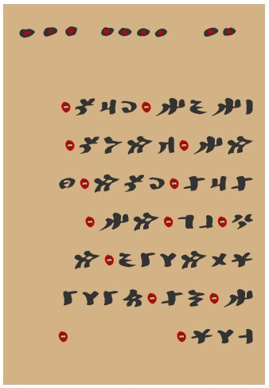
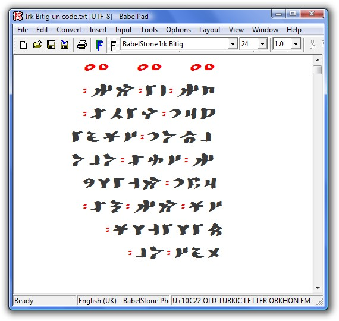

BabelStone Irk Bitig is an Old Turkic font that only covers the subset of characters used in the Irk Bitig 𐰃𐰺𐰴 𐰋𐰃𐱅𐰃𐰏 "Book of Omens" (British Library Or.8212/161).
BabelStone Irk Bitig only covers a subset of 37 of the 73 encoded characters in the Old Turkic block. It does not cover any of the characters encoded for use with Yenisei inscriptions (i.e. those characters named OLD TURKIC LETTER YENISEI ...). Nor does it cover any of the following Orkhon characters that are not used in the only extant manuscript copy of the Irk Bitig :
A polychrome version of this font, with dice pips and the word separator mark rendered in black and red, as in the manuscript text of
Irk Bitig Omen 10 displayed using BabelStone Irk Bitig Colour font

BabelStone Irk Bitig (24 points)

Irk Bitig Omen 1
The tables below render each character in the BabelStone Irk Bitig font, either using the font installed on your local machine or using a WOFF font if the font is not installed on your local machine.
| Code Point | Character Name | Glyph (monochrome) | Glyph (polychrome) |
|---|---|---|---|
| U+2680 | DIE FACE-1 | ⚀ | ⚀ |
| U+2681 | DIE FACE-2 | ⚁ | ⚁ |
| U+2682 | DIE FACE-3 | ⚂ | ⚂ |
| U+2683 | DIE FACE-4 | ⚃ | ⚃ |
| Code Point | Character Name | Glyph (monochrome) | Glyph (polychrome) |
|---|---|---|---|
| U+2E31 | WORD SEPARATOR MIDDLE DOT | ⸱ | ⸱ |
| Code Point | Character Name | Glyph |
|---|---|---|
| U+10C00 | OLD TURKIC LETTER ORKHON A | 𐰀 |
| U+10C03 | OLD TURKIC LETTER ORKHON I | 𐰃 |
| U+10C06 | OLD TURKIC LETTER ORKHON O | 𐰆 |
| U+10C07 | OLD TURKIC LETTER ORKHON OE | 𐰇 |
| U+10C09 | OLD TURKIC LETTER ORKHON AB | 𐰉 |
| U+10C0B | OLD TURKIC LETTER ORKHON AEB | 𐰋 |
| U+10C0D | OLD TURKIC LETTER ORKHON AG | 𐰍 |
| U+10C0F | OLD TURKIC LETTER ORKHON AEG | 𐰏 |
| U+10C11 | OLD TURKIC LETTER ORKHON AD | 𐰑 |
| U+10C13 | OLD TURKIC LETTER ORKHON AED | 𐰓 |
| U+10C14 | OLD TURKIC LETTER ORKHON EZ | 𐰔 |
| U+10C16 | OLD TURKIC LETTER ORKHON AY | 𐰖 |
| U+10C18 | OLD TURKIC LETTER ORKHON AEY | 𐰘 |
| U+10C1A | OLD TURKIC LETTER ORKHON AEK | 𐰚 |
| U+10C1C | OLD TURKIC LETTER ORKHON OEK | 𐰜 |
| U+10C1E | OLD TURKIC LETTER ORKHON AL | 𐰞 |
| U+10C20 | OLD TURKIC LETTER ORKHON AEL | 𐰠 |
| U+10C22 | OLD TURKIC LETTER ORKHON EM | 𐰢 |
| U+10C23 | OLD TURKIC LETTER ORKHON AN | 𐰣 |
| U+10C24 | OLD TURKIC LETTER ORKHON AEN | 𐰤 |
| U+10C26 | OLD TURKIC LETTER ORKHON ENT | 𐰦 |
| U+10C28 | OLD TURKIC LETTER ORKHON ENC | 𐰨 |
| U+10C2A | OLD TURKIC LETTER ORKHON ENY | 𐰪 |
| U+10C2D | OLD TURKIC LETTER ORKHON ENG | 𐰭 |
| U+10C2F | OLD TURKIC LETTER ORKHON EP | 𐰯 |
| U+10C30 | OLD TURKIC LETTER ORKHON OP | 𐰰 |
| U+10C32 | OLD TURKIC LETTER ORKHON EC | 𐰲 |
| U+10C34 | OLD TURKIC LETTER ORKHON AQ | 𐰴 |
| U+10C38 | OLD TURKIC LETTER ORKHON OQ | 𐰸 |
| U+10C3A | OLD TURKIC LETTER ORKHON AR | 𐰺 |
| U+10C3C | OLD TURKIC LETTER ORKHON AER | 𐰼 |
| U+10C3D | OLD TURKIC LETTER ORKHON AS | 𐰽 |
| U+10C3E | OLD TURKIC LETTER ORKHON AES | 𐰾 |
| U+10C41 | OLD TURKIC LETTER ORKHON ESH | 𐱁 |
| U+10C43 | OLD TURKIC LETTER ORKHON AT | 𐱃 |
| U+10C45 | OLD TURKIC LETTER ORKHON AET | 𐱅 |
| U+10C47 | OLD TURKIC LETTER ORKHON OT | 𐱇 |
The glyph forms of the letters used in the unique Irk Bitig manuscript differ in many respects from the representative glyph forms for the corresponding characters in the Unicode code charts; in particular OLD TURKIC LETTER ORKHON OT, which is not attested in any other manuscript text or inscription, is significantly different from the unsatisfactory representative glyph given in the code charts (which is itself based on the unsatisfactory glyph given in various modern sources). In some cases the Irk Bitig glyph form is closer to the corresponding Yenisei glyph form than the Orkhon glyph form given in the code charts, but as the Irk Bitig script is overall more closely related to the script form used in the Orkhon inscriptions than the script form used in the Yenisei inscriptions, all of the Irk Bitig letters are mapped to Orkhon characters rather Yenisei characters or a mixture of Orkhon and Yenisei characters.
There are two orthographic peculiarities in the Irk Bitig manuscript. Firstly, all words in Irk Bitig where the letter š would be expected are written with either OLD TURKIC LETTER ORKHON AS (s¹) or OLD TURKIC LETTER ORKHON AES (s²), as appropriate, instead of OLD TURKIC LETTER ORKHON ESH. Secondly, OLD TURKIC LETTER ORKHON AER only occurs once in the entire manuscript of Irk Bitig (Omen 4 on folio 8a). In all other cases the front vocalic form of the letter r (r²) is represented using the graphically similar OLD TURKIC LETTER ORKHON ESH. The author or scribe of the manuscript has probably accidentally used the wrong character for r² as OLD TURKIC LETTER ORKHON ESH is not used for its original purpose. If it were not for the one instance of the correctly written OLD TURKIC LETTER ORKHON AER I would have mapped the š-like glyph to OLD TURKIC LETTER ORKHON AER, and left OLD TURKIC LETTER ORKHON ESH unmapped, but as both glyph forms occur it seems best to map them separately to OLD TURKIC LETTER ORKHON AER and OLD TURKIC LETTER ORKHON ESH.
The Irk Bitig manuscript uses a word separation mark comprising two elongated black dots overlaid in almost all cases by a red circle. In the font this mark is represented by an unencircled glyph form as otherwise the glyph is too unclear. The mark is mapped to U+2E31 WORD SEPARATOR MIDDLE DOT, as although it is a double middle dot rather than a single middle dot, it is semantically the most appropriate character to use.
Old Turkic was written right-to-left, and the Old Turkic characters encoded in Unicode all have the Right-to-Left bidirectional class, so conformant implementations of the Bidi algorithm for Unicode 5.2 or later should render Old Turkic text right-to-left. However, at present all operating systems (including Windows XP, Vista and 7) render Old Turkic text left-to-right. It should be possible to force right-to-left rendering by inserting a Right-to-Left Override code (U+202E) at the start of the Old Turkic text, but on XP, Vista and 7 this has no effect on the rendering direction, but does cause the cursor positioning to go completely wrong when moving through the Old Turkic text (verified in Notepad and BabelPad, and therefore a bug in Uniscribe).
Nevertheless, on web pages it is possible to force RTL layout in a CSS3 stylesheet by setting direction: rtl and unicode-bidi: bidi-override, as in the Wikipedia OldTurkicUnicode template.
The Unicode Standard version 5.2 states that "the Old Turkic script is written from right to left within a row, with rows running from bottom to top"; however, at least in Irk Bitig, which is by far the most important and extensive Old Turkic manuscript text, the text is actually written from right to left within a row, with rows running from top to bottom.
| Font | Version | Date | Notes |
|---|---|---|---|
| BabelStone Irk Bitig | 1.00 | 2011-02-14 | Initial release |
| BabelStone Irk Bitig | 1.01 | 2013-11-06 | Licensed under SIL Open Font License 1.1 |
| BabelStone Irk Bitig Colour | 1.01 | 2017-04-06 | Polychromatic version of the font. |
BabelStone Irk Bitig is licensed under the SIL Open Font License 1.1, which means you are free to use it for personal or commercial purposes, and to redistribute it by itself or as part of a free or commercial software package, just as long as you do not sell the font on its own. The license also allows you to modify the font in any way you like, as long as the modified font does not use "BabelStone" in its name. Please read the license for details.